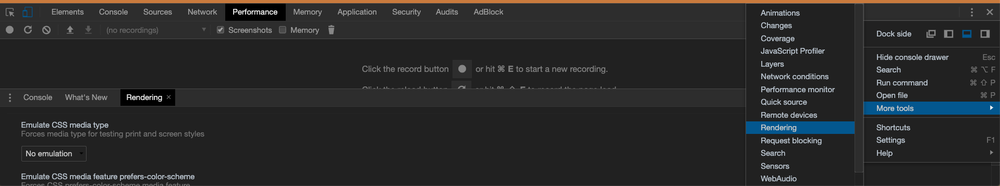

Media Queries
All
Aplicado para todos los dispositivos.
Print
Destinado a material impreso y visualización de documentos en una pantalla en el modo de vista previa de
impresión.
Para testear Print desde Google Chrome

Screen
Destinado a principalmente a pantallas de computadora a color.
speech
Destinado a sintetizadores de voz. Nota: CSS2 tenía un tipo de medio similar llamado 'aural' para este
propósito.
Only
El operador only previene que navegadores antiguos que no soportan queries con funciones apliquen los estilos
asignados:
"link rel="stylesheet" media="only screen and ()" href="Ejemplo.css" "
Breakpoints de la W3school
- /* Extra small devices (phones, 600px and down) */
@media only screen and (max-width: 600px) {...}
- /* Small devices (portrait tablets and large phones, 600px and up) */
@media only screen and (min-width: 600px) {...}
- /* Medium devices (landscape tablets, 768px and up) */
@media only screen and (min-width: 768px) {...}
- /* Large devices (laptops/desktops, 992px and up) */
@media only screen and (min-width: 992px) {...}
- /* Extra large devices (large laptops and desktops, 1200px and up) */
@media only screen and (min-width: 1200px) {...}
Ver fuentes